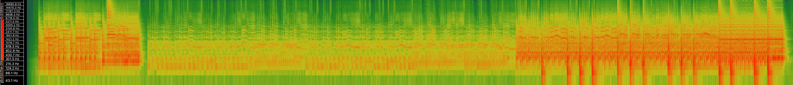
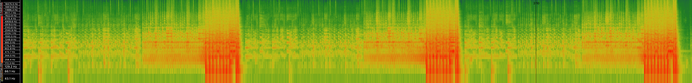
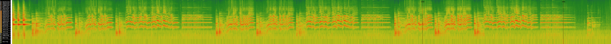

MCA-2026: Carmina Burana by Carl Orff
Identify and download three music tracks relating to your portfolio theme. For each track: load the track and add 3 panes. One should be a Spectrogram, one a Mel Frequency Cepstral Coefficients, and one a Chromagram. Take a screenshot of the panes. Save the three annotation layers as individual CSV files.
As for the previous week, my 3 tracks are the first three movements of Carmina Burana by Carl Orff. All of them are performed by MIT Concert Choir, can be downloaded from Free Music Archive and are licended as CC BY-NC. The recordings were released on Jun 03, 2011.



For each track and feature type extracted in task 1: Compute and visualize the histogram of the features for the three tracks. For either the MFCC or Chroma feature, compare the histograms for the 3 tracks and highlight/discuss if the histograms capture significant differences between the tracks and if you expected this difference based on listening to the tracks (max 300 words).